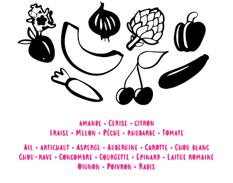

De nombreux aliments et cultures dont nous dépendons ont besoin ou du moins tirent profit de la pollinisation des abeilles. En voici quelques exemples :
Lorsque les fleurs d'un arbre fruitier ne sont pas suffisamment pollinisées, son fruit peut prendre une forme inhabituelle.
Plus les abeilles se posent sur les fleurs, plus les fruits que produiront ces dernières seront gros et uniformes. On observe surtout cet effet bénéfique de la pollinisation sur les fruits qui poussent dans des arbres.